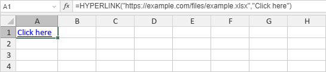

HYPERLINK Funkcija
Funkcija HYPERLINK je jedna od funkcija za pretragu i reference. Koristi se za kreiranje prečice koja vodi na drugo mesto u trenutnom radnom listu, ili otvara dokument sa mrežnog servera, intraneta ili Interneta.
Sinaksa
HYPERLINK(lokacija_linka, [prijateljsko_ime])
Funkcija HYPERLINK ima sledeće argumente:
| Argument | Opis |
|---|---|
| lokacija_linka | Putanja i ime fajla dokumenta koji treba da se otvori. U online verziji putanja može biti samo URL adresa. lokacija_linka takođe može referencirati određeno mesto u trenutnom radnom listu, npr. određenu ćeliju ili imenovani opseg. Vrednost se može uneti kao tekstualni string u navodnicima ili referencu na ćeliju koja sadrži link kao tekstualni string. |
| prijateljsko_ime | Tekst koji se prikazuje u ćeliji. Ovo je opcion argument. Ako se izostavi, prikazuje se vrednost lokacija_linka u ćeliji. |
Napomene
Napomena: ovo je formula niza. Za više informacija pročitajte članak Umetanje formula niza.
Kako primeniti funkciju HYPERLINK.
Primeri
Slika ispod prikazuje rezultat koji vraća funkcija HYPERLINK.
Da biste otvorili link, kliknite na njega. Da biste selektovali ćeliju koja sadrži link bez otvaranja, kliknite i držite taster miša.
